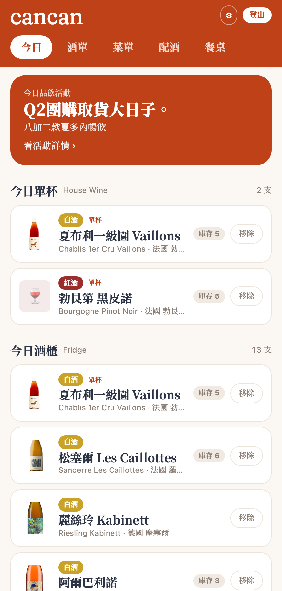
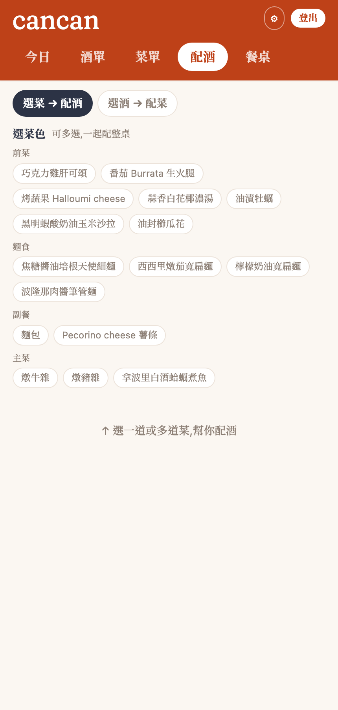
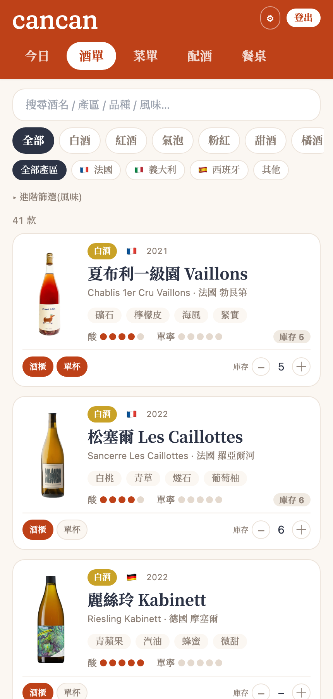
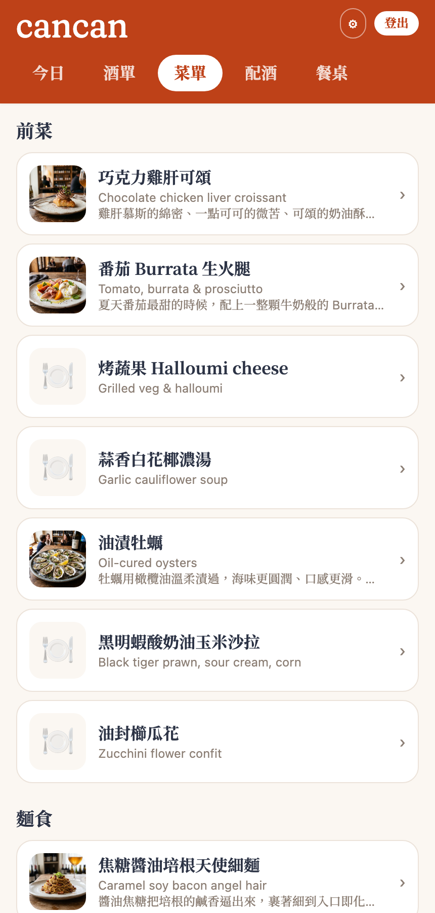
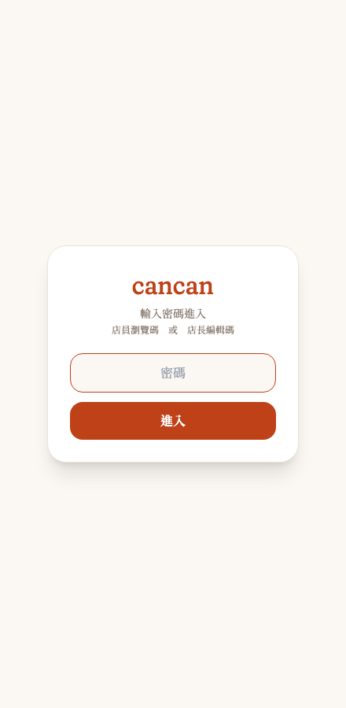

用一張 Google Sheet
長出一整套 wine bar App
從零幫一間台北 natural wine bar 做整套酒款管理工具：用 Apps Script 把 Google Sheet 變資料庫、長出 10 個分頁，再拉出一個手機 App（今日酒櫃／單杯／酒單／菜單／雙向配酒／詳情／瓶頸小卡 QR／品飲活動／今日餐桌），最後發佈成可安裝的 PWA。全程我不會寫程式，只描述情境與感覺，AI 負責設計資料結構、寫前後端、部署、生圖。
為什麼要做這件事
起點是三個很具體、每天都在發生的營運痛點：
- 酒商資料整理到天荒地老：合作 20–30 家酒商，給的資料格式天差地遠——PDF、手機拍的 JPG、一句話塞在 Excel 總表裡。每進一批酒就要重新整理、還要上網查產區/品種/酒精度補齊。
- 店員記不住 50–60 款酒：natural wine 名字又長又難記，店員忙起來沒空好好介紹，更別說推薦搭配。
- 菜單常換，配酒要跟著重排：每換一次菜，哪支酒配哪道菜就要重想一輪。
我想要的最終狀態很明確：
用「一張 Google Sheet」管理全部酒款，店員在手機上查得到、AI 幫忙產草稿、我只要在 Sheet 上審核，App 就即時更新。
並且要能自動產出兩個交付物——印出來綁在瓶頸上的「瓶頸小卡」，跟「依菜推酒」的配酒建議。
最終樣貌
一個部署在 Vercel、可安裝到手機的 PWA，後面接一張 Google Sheet 當資料庫。主要畫面：
- 今日（預設頁）：今日活動橫幅 + 今日單杯（House Wine）+ 今日酒櫃，店員打開就看到「今天有什麼可以賣、可以推」。
- 酒單：全部在架酒，可用風味 / 國家篩選，點進去看詳情。
- 菜單：當期菜色，含照片與介紹。
- 配酒：雙向——「選菜 → 配酒」幫整桌配，或「選酒 → 配菜」。
- 酒款詳情：品飲分數、風味標籤、酒莊故事 / 豆知識 / 店內品酒筆記、侍酒備註、外部評分（Vivino），底部可生瓶頸小卡 + QR。
- 品飲活動：辦品酒會時，把 Config 一個開關打開就出現「今日活動」頁。
- 今日餐桌：遇到值得紀念的一桌，店長挑菜/酒、側拍照、寫開場白與手寫感謝，生成
?s=連結 + QR 送給客人。 - 兩層登入：店員「瀏覽碼」只能看、店長「編輯碼」可改；客人連結免登入、看不到任何內部資料。




系統架構
整套工具是三層，核心理念：Google Sheet = 唯一真相來源（資料庫）＋人工審核面；AI 只產草稿，老闆核可後才上線；前端與任何工具都只讀後端吐的 JSON。
資料庫：10 張表怎麼分工
整張 Google Sheet 有 10 個分頁。它們不是一條平的清單，而是有「角色」之分——Wines（酒款主表）是中心，其他表不是繞著它記細節（明細），就是把它和別張表牽起來（橋接），或是被它查詢（字典／查找表）。想通這層分工，就懂整個資料庫怎麼運作。
「一道菜可以配多支酒、一支酒也可以配多道菜」——這種關係塞不進任何一張主表，所以中間放一張 Pairings 專門記每一組搭配。這張「橋接表」就是配酒功能能雙向查（選菜配酒、選酒配菜）的關鍵。
| 分頁 | 角色 | 主要目的 | 怎麼關聯 |
|---|---|---|---|
| Wines 酒款 | 中心主表 | 一支酒一列：規格、價格、庫存，及三個獨立開關 active／inFridge／byGlass | 被其他表用 wineId 指向 |
| WineNotes 酒款筆記 | 明細（1 對多） | 一支酒多則筆記：豆知識／酒莊故事／店內品酒；分客人看與店員看 | wineId → Wines |
| Feedback 客人回饋 | 明細（1 對多） | 記客人口味反饋（店員走免密碼通道寫入） | wineId／dishId |
| Menu 菜單 | 主表 | 菜色（常換）：中英名、描述、價格、風味 | 透過 Pairings 連 Wines |
| Pairings 配酒 | 橋接（多對多） | 一列＝一組 (菜, 酒)；AI 產的要老闆核可才上線 | dishId→Menu、wineId→Wines |
| FlavorVocab 風味詞庫 | 字典（共用） | 酒與菜的共同風味詞；避免 AI 風味詞亂飄、重複 | 被 Wines.tags 與 Menu.flavorProfile 取用 |
| Vendors 酒商 | 查找表 | 20–30 家酒商；追貨源、算毛利 | 被 Wines.vendor 參照 |
| Countries 國家 | 查找表 | 國名中英／國碼對照（小卡上的「產區 (國碼)」） | 被 Wines.country 參照 |
| Config 設定 | 設定開關 | 全店開關：是否顯示售價、品飲活動、照片資料夾 ID | 獨立，與酒無直接關聯 |
| Sessions 今日餐桌 | 快照 | 一筆＝一張客人回憶頁（當天的菜/酒/側拍照） | wineIds／dishIds 引用 Wines/Menu |
| 關係 | 哪些表 | 白話 |
|---|---|---|
| 主表 → 明細（1 對多） | Wines → WineNotes／Feedback | 一支酒，很多則筆記/回饋 |
| 橋接（多對多） | Menu ↔ Pairings ↔ Wines | 菜和酒互相配，中間用一張表記 |
| 字典／查找（被參照） | FlavorVocab／Vendors／Countries | 共用詞庫與對照表，避免各寫各的 |
active（庫房有貨）→ 勾 inFridge（進今日酒櫃）→ 勾 byGlass（今日單杯），App「今日」頁就讀這三個開關。③ 配酒靠 FlavorVocab 當共同詞庫，把 Menu 的風味比對 Wines 的風味標籤。技術選型
| 選擇 | 為什麼選它 |
|---|---|
| Google Sheet 當資料庫 | 老闆會用試算表；改資料不用工程師、不用後台，直接編格子就好 |
| Apps Script Web App | 免費、免主機、跟 Sheet 同源；doGet 吐 JSON、doPost 寫回，一個檔搞定後端 |
| Preact + htm + Tailwind（走 CDN，零 build） | 整個前端就一個 index.html，沒有 build step、沒有 node_modules；改完直接部署 |
| Vercel + PWA | 一行指令部署；PWA 讓店員把它「裝」到手機桌面，像 App 一樣開 |
| JSONP 讀 / text/plain 寫 | Apps Script 跨網域有 CORS 限制；GET 用 JSONP、POST 用 text/plain 繞過瀏覽器預檢 |
| 中文表頭 ↔ 英文 key | Sheet 顯示中文表頭（老闆看得懂），程式裡用英文 key（好寫）；兩邊自動轉換 |
| Fraunces + LXGW WenKai TC | wordmark 要「軟襯線」調性；今日餐桌的手寫感謝用手寫字體渲染，比放照片真 |
| 外部評分「查一次存起來」 | Vivino / Wine-Searcher 沒開放 API；進酒時查一次填進 Sheet |
從零到上線的歷程
第一步不是寫程式，是設計資料庫。AI 幫我把營運裡的每個概念對到一個分頁：
- Wines（酒款主表）：一支酒一列，含產區、品種、品飲分數、風味、價格、進價、酒商、庫存……還有三個關鍵獨立開關——
active（可賣）、inFridge（今日在酒櫃）、byGlass（今日有單杯），對應店裡真實動線：庫房 → 今日酒櫃 → 今日單杯。 - WineNotes（店內知識庫）：一支酒對多筆筆記，分豆知識/酒莊故事/店內品酒/侍酒建議；分「店員看」與「客人看」可見度。
- Menu / Pairings / FlavorVocab / Feedback / Vendors / Countries / Config：菜單、配酒（可手動/規則/AI、雙向查）、風味詞庫（讓酒和菜講同一種語言）、客人回饋、酒商、國家、全店設定（含品飲活動開關）。
- 後來又加了第 10 個 Sessions（今日餐桌）。
老闆要在 Sheet 上看到「品名 / 產區 / 售價」這種中文表頭；但程式裡用中文當欄位名是惡夢。AI 設計了一層對照表：讀資料時把中文表頭轉成英文 key，寫資料時再轉回中文。 老闆看到的是中文、程式吃到的是英文，兩邊都舒服。這層機制是後面所有功能的地基。
- doGet（唯讀 JSON）：店員/店長帶密碼拿「完整資料」；客人不帶密碼拿「瘦身過的公開資料」。
- doPost（寫入）：店長帶密碼可新增/修改/刪除；另開一條免密碼通道讓店員記錄客人回饋（只能寫進 Feedback、欄位白名單）。
- 部署成「任何人可存取」的 Web App，前端就能免金鑰讀取。
所有畫面都在一個 index.html 裡，用 Preact 的 view 切換，一個一個長出來：今日酒櫃/單杯、酒單 + 風味/國家篩選、菜單、雙向配酒、酒款詳情、瓶頸小卡 + QR（印出來綁瓶頸）、品飲活動。


加上 manifest 與 service worker，店員就能把網址「加入主畫面」，開起來沒有瀏覽器網址列，像原生 App，還能離線開上次的資料。對店員來說，它就是一個 App，不需要知道後面是一張 Google Sheet。
遇到很有趣的一桌，店長挑菜/酒、側拍照、寫開場白與手寫感謝、選版型，生成 ?s= 專屬連結 + QR 送給客人。順手補上：酒款詳情顯示 Vivino 外部評分；以及「兩層密碼 + 公開資料自動去掉敏感欄位」——因為今日餐桌會把工具網址交到客人手上，逼出一個本來沒注意的隱私問題。

AI 怎麼幫我做的
- 設計 Sheet 資料結構
- 寫前端 Preact + 後端 Apps Script
- 部署上線、發佈 PWA
- 生示範照片、上網查酒的評分
- 要做什麼、像不像
- 把營運語言翻成需求
- 放哪裡、哪裡怪
- 看截圖給回饋、拍板
以「情境描述」開頭（例：店員記不住 50 款酒／遇到有趣的一桌想送回憶），AI 先給做法建議＋老實講限制，談好方向才動手；接著是「看截圖 → 微調」的快速來回。
踩到的坑，讓我更懂的事
原本店員免登入就能瀏覽，看似貼心，其實代表客人也能摸到同一個畫面，背後資料甚至含成本與內部筆記。
Apps Script 的 Web App 從別的網域讀寫會被瀏覽器擋；GET 要用 JSONP、POST 要用 text/plain 才繞得過。部署存取權設成「任何人」跟「任何有 Google 帳號的人」也差很多，後者會變登入牆；而且自己登入的瀏覽器兩種都看得到，要用無痕視窗驗證。
想顯示 Vivino 評分，但它沒開放 API、爬蟲又違規；自然酒/小農更常常根本沒有評分。
模擬手寫感謝時，貼 AI 生成的手寫卡照片怎麼看都假。改成用手寫字體把字排在頁面上、背景跟頁面一致，立刻就對了。
每次調完 AI 都先在本機預覽、截圖確認再上線；連「收合工具時殘留的 QR 視窗」這種小 bug 也是這樣抓到的。
Takeaway
非工程師也能主導開發一整套工具。重點不是會不會寫程式，而是會描述情境、會把營運語言翻成資料結構、會判斷「像不像/順不順」、敢追問。最有效的模式是「先講情境讓 AI 提方案 + 看截圖快速迭代」。